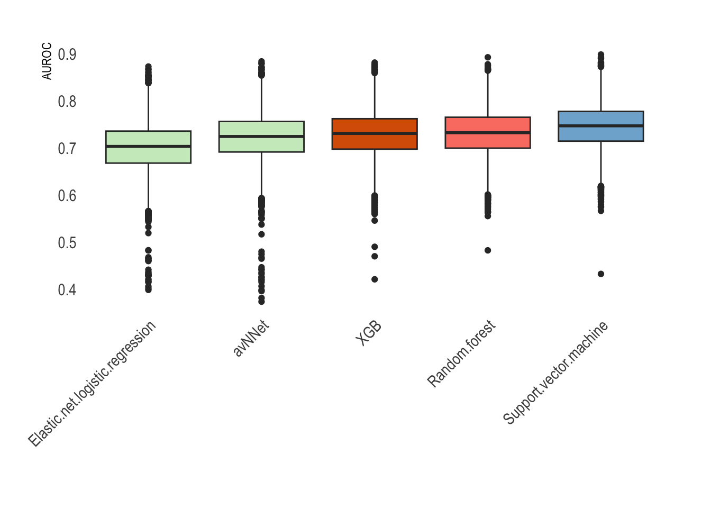

ble.tr <- readRDS("TrainingsSet.RDS")
ble.te <- readRDS("InternalValidationSet.RDS")3 Model training
3.1 Introduction
This chapter shows the training of the five best performing models in the model screening and the internal validation. Hyperparameter tuning is not shown.
3.2 Data loading
The data sets are loaded:
Libraries
library(caret) # Model training
library(ggplot2) # Visualization
library(DT) # Data tables
library(doParallel) # Parallelization
library(dplyr) # Data manipulation
library(tidyverse) # Data manipulation
library(hrbrthemes) # Theme for ggplot
library(RColorBrewer)
library(boot)
library(pROC)
library(ThresholdROC)3.3 Model training
#Train control
traincontrol3 <-trainControl(method = "repeatedcv", number = 10, repeats = 5, allowParallel = TRUE,
summaryFunction = twoClassSummary, selectionFunction = "best", classProbs = TRUE)
# Elastic net logistic regression -----------------------------------------------------------------------
set.seed(1033)
cls = makeCluster(8)
registerDoParallel(cls)
m.enlog <- train(mbd ~ sex + PFA_EPI + surgery.simp + menorrhagia.simp + postpartum.simp + minorwound.simp + epistaxis.simp + tooth.simp + oralcavity.simp+ aPTT+ cutaeous.simp,
trControl = traincontrol3,
tuneGrid = expand.grid(alpha = 0.3, lambda = 0.01), metric = "ROC", data = ble.tr, method = "glmnet",
preProc = c("bagImpute","center","scale", "YeoJohnson"), na.action = na.pass)
stopCluster(cls)
# avNNet ---------------------------------------------------------------------------------------------------
set.seed(1033)
cls = makeCluster(5)
registerDoParallel(cls)
m.avnnet <- train(mbd ~ sex + PFA_EPI + surgery.simp + minorwound.simp + menorrhagia.simp + epistaxis.simp + tooth.simp + aPTT+ cutaeous.simp +sex,
trControl = traincontrol3,
tuneGrid = expand.grid(size = c(4),decay = 0.0099, bag = c(FALSE)),
metric = "ROC", data = ble.tr, method = "avNNet",
preProc = c("bagImpute","center","scale", "YeoJohnson"), verbose = FALSE, na.action = na.pass)
stopCluster(cls)
# RF ----------------------------------------------------------------------------------------------------
set.seed(1033)
cls = makeCluster(5)
registerDoParallel(cls)
set.seed(1033)
m.rf <- train(mbd ~ sex + PFA_EPI + surgery.simp + menorrhagia.simp + postpartum.simp + minorwound.simp + epistaxis.simp + tooth.simp + oralcavity.simp+ aPTT+ cutaeous.simp,
trControl = traincontrol3,
tuneGrid = expand.grid(mtry = 3),
metric = "ROC", data = ble.tr, method = "rf", ntree = 150,
preProc = c("bagImpute","center","scale", "YeoJohnson"), na.action = na.pass)
stopCluster(cls)
# SVM ---------------------------------------------------------------------------------------------------
set.seed(1033)
cls = makeCluster(8)
registerDoParallel(cls)
m.svm <- train(mbd ~ sex + PFA_EPI + surgery.simp + menorrhagia.simp + postpartum.simp + minorwound.simp + epistaxis.simp + tooth.simp + oralcavity.simp+ aPTT+ cutaeous.simp,
trControl = traincontrol3,
metric = "ROC", data = ble.tr, method = "svmRadial",
tuneGrid = expand.grid(C =seq(0.27) ,sigma = 0.0175),
preProc = c("bagImpute", "center","scale", "YeoJohnson"), na.action = na.pass)
stopCluster(cls)
# XGB ---------------------------------------------------------------------------------------------------
set.seed(1033)
cls = makeCluster(8)
registerDoParallel(cls)
m.xgb <- train(mbd ~ sex + PFA_EPI + surgery.simp + menorrhagia.simp + postpartum.simp + minorwound.simp + epistaxis.simp + tooth.simp + oralcavity.simp+ aPTT+ cutaeous.simp,
trControl = traincontrol3, tuneGrid = expand.grid(gamma = 0, min_child_weight = 1,rate_drop =0.01, skip_drop = c(0.05),subsample = c(1), colsample_bytree = 0.8, nrounds = 58, eta =.42, max_depth = c(1) ),
maximize = FALSE, data = ble.tr, method = "xgbDART",metric = "ROC",
preProc = c("bagImpute", "center","scale", "YeoJohnson"), na.action = na.pass)
stopCluster(cls)3.4 Performance in the trainings data set
n <- 60
qual_col_pals = brewer.pal.info[brewer.pal.info$category == 'qual',]
col_vector = unlist(mapply(brewer.pal, qual_col_pals$maxcolors, rownames(qual_col_pals)))
modellist <- list( "Elastic-net logistic regression" = m.enlog,
"avNNet" = m.avnnet, "Random forest" = m.rf, "Support vector machine" = m.svm,
"XGB" = m.xgb)
resamp <- resamples(modellist)
datresamp <- as.data.frame(resamp)
test <- datresamp %>%
pivot_longer(!Resample,names_to = "Modeltype", values_to = "AUC")
ggplot(test,aes(x = Modeltype, y = AUC, fill = Modeltype)) +
geom_boxplot() +
scale_fill_brewer(palette = "Spectral")+
theme(legend.position = "none") +
xlab("")+
theme(axis.text.x = element_text(angle = 45, vjust = 1, hjust=1))+
theme(
panel.background = element_rect(fill = "white", color = "white"),
plot.background = element_rect(fill = "white", color = "white"),
panel.grid.major = element_blank(),
panel.grid.minor = element_blank(),
legend.position = "none"
)3.5 Internal validation
calc_roc <- function(df,i, model){
x <- df[i,]
preds_mod <- predict(model, x, type = "prob", na.action = na.pass)[,2]
roc_temp <- roc(x$mbd,preds_mod, quiet = TRUE)
return(roc_temp$auc)
}
set.seed(123)
enlog.boot <- boot(ble.te,calc_roc, R= 10000,stype = "i", model = m.enlog)
set.seed(123)
avnnet.boot <- boot(ble.te,calc_roc, R= 10000,stype = "i", model = m.avnnet)
set.seed(123)
rf.boot <- boot(ble.te,calc_roc, R= 10000,stype = "i", model = m.rf)
set.seed(123)
svm.boot <- boot(ble.te,calc_roc, R= 10000,stype = "i", model = m.svm)comb <- data.frame("Elastic-net logistic regression" = enlog.boot$t,
"avNNet" = avnnet.boot$t,
"Random forest" = rf.boot$t,
"Support vector machine"= svm.boot$t,
"XGB" = xgb.boot$t)
aurocs <- comb %>%
pivot_longer(everything(),values_to = "AUROC", names_to = "Model")
ggplot(aurocs, aes(x = reorder(Model,AUROC,FUN = median), y = AUROC, fill = Model)) +
geom_boxplot() +
scale_fill_manual(values = sample(col_vector,5)) +
theme_ipsum()+
xlab("")+
theme(axis.text.x = element_text(angle = 45, vjust = 1, hjust=1))+
theme(
panel.background = element_rect(fill = "white", color = "white"),
plot.background = element_rect(fill = "white", color = "white"),
panel.grid.major = element_blank(),
panel.grid.minor = element_blank(),
legend.position = "none"
)
3.6 Final model
The final model that was selected was a support vector machine with a radial kernel. Using bootstraps the median AUROC in the internal validation set was 0.75 (95% CI: 0.65, 0.84).
3.7 Cut-off selection
p.te.svm <- predict(m.svm, ble.te, type = "prob", na.action = na.pass)[,2]
th <- thres2(p.te.svm[ble.te$mbd == "NoMBD"],p.te.svm[ble.te$mbd == "MBD"], rho = 0.5,
costs = matrix(c(0, 0, 1, 1.5), 2, 2, byrow = TRUE))
plot(th)The optimal cut-off in the interal validation set is at 0.39 using a higher cost for false negative patients.